この物語はフィクションです。実在の人物・団体・事件などとは一切関係ありません。
Music

航士朗
夕陽の帰り道
音源を再生できませんでした。通信環境を確かめて、もう一度お試しください。
歌詞（夕陽の帰り道）
日々の景色が 音になる
夕陽に染まる 帰り道
ポケットの中 からっぽでも
鼻歌ひとつ あればいい
急がなくて いいよって
波が そう言ってる
なくしたものは 風にあずけて
歌うよ きょうの空を
ぜんぶ 茜に溶かして
沈む光も あしたの色
手ぶらのままで 帰ろう
うまく言えない ことばかり
胸の奥で 鳴っている
だれかの窓に 灯りがともる
それだけで ほら あたたかい
急がなくて いいよって
波が そう言ってる
抱えたものは 海にあずけて
歌うよ きょうの空を
ぜんぶ 茜に溶かして
沈む光も あしたの色
手ぶらのままで 帰ろう
持ちきれないものは 置いていこう
海は なんにも 聞かないから
歌うよ きょうの空を
届け 君の街まで
沈む光も あしたの色
ここから 始まる歌
ららら ららら
おかえり ただいま
慣れない街にも 季節が巡って
いつの間にか 道だけ覚えた
やりたいことがあって来たはずなのに
何をしてるんだろうって 夜がある
君も知らない街で 頑張ってるんだね
たまに送られてくる 何気ない写真
「帰りたいね」って笑い合うけど
帰る日なんて まだ決められない
電話越しの「大丈夫」が
少しだけ無理して聞こえた
本当は僕だってそうなのに
うまく言葉にできなかった
会いたいな こんな夜ほど
君が隣にいてくれたなら
何も変わらない毎日だって
少しは好きになれるのかな
帰りたいな あの街にも
まだ名前のない僕らの未来にも
遠回りばかりしているけど
いつかこの日々を笑えるように
もう少し 歩いてみよう
久しぶりに会えた 二日間は
あっという間に 過ぎてしまって
帰り際 いつもより静かな君に
何を言えばいいか わからなかった
次に会える日を 数えるたびに
会えない日まで 数えてしまう
お互いの暮らしが忙しくなるほど
知らない君が 増えていく気がした
小さなことで すれ違って
素直になれない夜もある
好きだけじゃ足りないことを
知りたくなんてなかったのに
会いたいな それだけなのに
どうしてこんなに難しいんだろう
君の寂しさも 僕の弱さも
画面越しじゃ抱きしめられない
帰りたいな あの頃みたいに
先のことなんて気にせず笑いたい
でも戻りたいだけじゃないんだ
まだ見たことのない景色を
君と一緒に見てみたい
二十歳を過ぎて 少し経って
大人になった気でいたけど
仕事も夢も これからのことも
わからないことばかりだ
君は君の街で 僕は僕の街で
それぞれの朝を迎えてる
いつか同じ窓から
同じ空を見られるかな
約束できることは少ないけど
諦めたくないものはあるんだ
会いたいよ 何年経っても
君にそう思える僕でいたい
遠く離れたこの時間にも
きっと意味があると信じたい
帰りたいな いつか二人で
懐かしい街の風に吹かれて
あの頃より少し大人になって
何でもない話をしよう
まだ何者でもない僕らだけど
不安な明日も 楽しみな未来も
全部抱えて進んでいこう
いつか「おかえり」って言える場所を
二人で見つけられるように
君の街にも 夜が来る頃
僕は明日の準備をしてる
離れていても 同じように
今日を生きてる君がいる
まだ帰れない僕らにも
きっと 帰れる未来がある
Claude in the code
Code in the mode
Go beyond
未知への road
Claude in the code
Code in the mode
Break it
Make it
Wake it up
CLAUDE
黒いスクリーン 光る green
見えない意味まで read between
Promptを投下 思考が点火
一瞬で変化 限界突破
迷路の code
解読 mode
Loadして road
加速する flow
Errorの連鎖も 全部解析
曖昧な問いさえ 鮮明に再生
生成 精錬
訂正 前進
冷静 形成
限界 超えてく延長線
古い logic
ほどいて magic
Staticから dynamic
思考は dramatic
Think fast
Dig deep
One task
One leap
No stop
No sleep
答えのさらに奥へ deep
Code
Road
Mode
Claude
全部つないで
GO
CLAUDE
Break the CODE
Enter MODE
誰も知らない未来への ROAD
Think it DEEP
Make it CLEAN
複雑な世界を rewrite the scene
CLAUDE
Build it FAST
Make it LAST
過去の限界なら already passed
Read the SIGN
Draw the LINE
一行ごと未来を redefine
CODE
MODE
ROAD
CLAUDE
We don't follow the future
We CODE
Context long
判断 strong
Wrongを直して
move along
Read
Reason
Rewrite
Repeat
Beatに合わせて
complete the feat
設計 形成
修正 洗練
検証 実装
連動 上昇
速度と精度
両方制御
想像以上へ
更新する性能
Terminal開いて
signalを捉えて
散らかった taskを
一つに束ねて
Planして scan
Then understand
人の意図まで
expand the command
Impossible？
No.
Another route
Another code
Another thought
Another road
止まれば reload
迷えば decode
何度だって
REBUILD THE CODE
CLAUDE
Break the CODE
Enter MODE
未知を切り開く新しい ROAD
Think it DEEP
Make it CLEAN
一秒先さえ rewrite the scene
CLAUDE
Build it FAST
Make it LAST
昨日の常識なら already passed
Read the SIGN
Draw the LINE
人とAIで future redefine
Code in the mode
Claude on the road
Beyond the known
Beyond the code
CLAUDE
右 左 あと一歩
君のとなりに滑りこむ
好き 嫌い まだ内緒
バレそうなくらい踊ってる
朝のホームで寝ぐせを直す
昨日のテストは見なかったことに
一限目から眠たいけれど
君が笑えば全部オーライ
購買のパンは今日も売り切れ
くだらないことで笑い転げて
将来の夢は決まってないけど
今日の予定は君に会うこと
「また明日」って言える日が
永遠じゃないって知ってる
でも今は まだ今は
知らないふりで走れ
右 左 あと一歩
君のとなりに滑りこむ
好き 嫌い まだ内緒
バレそうなくらい踊ってる
右 左 手を上げて
僕らが今日の主役だぜ
明日のことは明日でいい
チャイムのあとが本番だ
Hey Hey まだ帰んない
Hey Hey まだ終わんない
せーので飛んだ その瞬間
世界はちょっと僕らのもの
放課後コンビニ アイスは半分
自転車押して遠回りした
たった五分の帰り道さえ
理由をつけて引き延ばしてた
既読のつかない夜は長くて
君のひと言で朝が来る
かっこつけてもバレてるのかな
友達以上はまだ怖い
写真の中の僕たちは
いつだってふざけてばっか
大人になったその先で
この日のことを笑えるかな
右 左 あと一歩
君との距離だけ縮まらない
好き 嫌い もういいよ
本当はずっと好きなんだ
右 左 手を上げて
青春なんて一瞬だぜ
正解なんてわかんないけど
間違いだって悪くない
最後のチャイムが鳴る頃に
僕らは何を話すんだろう
「また明日」って言えない日にも
君に笑っていてほしい
まだ まだ まだ
終わりじゃない
右 左 あと一歩
君のとなりに滑りこむ
好き 嫌い もう言うよ
誰より君が好きなんだ
右 左 手を上げて
僕らが今日の主役だぜ
明日のことは明日でいい
チャイムのあとが本番だ
Hey Hey まだ帰んない
Hey Hey 忘れらんない
Ladies and gentlemen...
今夜もご機嫌いかが？
ま、どうにかなるでしょ。
午前零時のエレガンス
ポケットの中はアンバランス
夢と現実 ごちゃ混ぜのダンス
それでも人生 悪くないセンス
綺麗な嘘に 汚れた靴
正論ばっかじゃ 退屈する
あれもダメ これもダメ
じゃあ何が楽しいの？ ねえ
洒落になんない そんな毎日
洒落にしちゃえば こっちの勝ち
品行方正？ そりゃご立派
でも今夜くらいは 羽目外そうか
楽になろうぜ 馬鹿になろうぜ
くだらない夜に 花を咲かそうぜ
笑い飛ばそうぜ 踊り明かそうぜ
どうせ明日も 騒がしい世界
Crazy days 曖昧なペース
正解なんて 誰が決めたんだい？
愛だの 嘘だの 夢だの 金だの
全部まとめて 乾杯しようぜ
Da-ba-da, da-ba-da, swing it
La-la-la, let it roll
上品な顔して ろくでなし
それくらいが ちょうどいい
月曜からもう 金曜日気分
時計の針と 気まずい自分
立派な理想と 薄っぺらい財布
それでも妙に ご機嫌なライフ
昨日の失敗 今夜の乾杯
反省はするけど 後悔はしない
世間の常識 非常識
そんなの時々 紙一重
ご機嫌斜めの 神様だって
たまには踊りたくなるでしょう
人生なんて 即興演奏
音を外しても 続けりゃ上等
楽になろうぜ 馬鹿になろうぜ
真面目な顔して ふざけていこうぜ
転んで笑おうぜ また立ち上がろうぜ
傷のひとつも 洒落に変えよう
Crazy night 危なげなスマイル
明日の予定は 未定でいいじゃない
恋だの 罰だの 欲だの 運だの
全部ひっくるめて 愛してやろうぜ
シャンデリアの下で
安い夢を語ろう
高価なスーツより
似合う傷もあるだろう
綺麗に生きるだけじゃ
綺麗になれない夜もある
だから今夜は そのままで
少しくらい 汚れていこう
正しいだけじゃ、つまんないだろ？
楽になろうぜ 馬鹿になろうぜ
笑えない日々も 笑いに変えようぜ
派手に転ぼうぜ 粋に生きようぜ
どうせ一度の 人生なんだから
Crazy days 最高のステージ
失敗だって 拍手に変えて
愛だの 嘘だの 夢だの 金だの
全部まとめて 抱きしめようぜ
楽になろうぜ 馬鹿になろうぜ
完璧じゃなくて 結構じゃない？
冗談みたいな 上等な人生
最後に笑えりゃ それでいい
上品な顔して ろくでなし
汚れた靴でも 踊れるさ
さて、もう一杯いかが？
3, 2, 1
まだ終わっちゃいないだろ
午前八時の交差点
昨日と同じ顔をして
予定通りの予定外
今日も世界は忙しい
数字の向こうの正解を
何食わぬ顔で探してる
器用になったつもりでも
胸の奥は騒がしい
誰かの期待に応えながら
自分の期待を後回し
うまく回ってる毎日が
なぜか少し物足りない
安全圏から旋回して
正解ばかりじゃ限界で
考えすぎて動けない
そんな僕にも飽きてきた
吹っ飛べ 吹っ飛べ 昨日の天井
予定も不安もいったん保留
平熱の顔で大爆発
まだまだこんなもんじゃない
飛び出せ 飛び出せ 想定の外
正解よりも鮮明な世界
守るものがある それでいい
だからって僕を閉じ込めないで
何回だって 何歳だって
初めてみたいに笑っていたい
この先の僕を 僕が驚かせたい
Oh-oh-oh, Over the limit
Oh-oh-oh, Into the future
まだ知らない僕がいる
まだ知らない世界がある
帰ればいつもの声がして
小さな寝息に夜が更ける
何より大事なこの景色
それはちゃんとわかってる
それでも静かな午前一時
画面の光に目を奪われ
知らない仕組みを見つけては
また新しい夢を見てる
現実的で理想的
合理的で衝動的
矛盾だらけのこの頭
案外嫌いじゃないんだよ
昨日の正解 今日の境界
期待と不安の境目で
できない理由を並べるより
できたら何が起こるだろう
吹っ飛べ 吹っ飛べ 常識の天井
失敗だって未来の材料
平凡な日々に大爆発
まだまだ面白くなる
飛び出せ 飛び出せ 想像の外
遠回りだって上等じゃない
変わらないものを抱きしめて
変わっていく僕を楽しもう
何回だって 何歳だって
初めてみたいに夢中でいたい
まだ見ぬ景色を 僕は見てみたい
正確な地図が欲しいくせに
地図にない道が気になる性分
間違えないように生きてきて
間違うことで見つけたもの
大人になればわかるなんて
誰が言い出したんだろう
知らないことが増えるたび
世界は広くなっていく
守りたい今日がある
変えてみたい明日がある
どちらかひとつじゃなくていい
ねえ そうだろう？
吹っ飛べ 吹っ飛べ 昨日の天井
退屈なんて置いていこう
平熱の顔で大爆発
まだまだこんなもんじゃない
飛び出せ 飛び出せ 想定の外
未来は誰にも決められない
ありふれた日々の真ん中で
ありえない夢を見ていたい
何回だって 何歳だって
この胸の熱を忘れたくない
誰かになる必要はない
昨日の僕を超えていきたい
吹っ飛べ 吹っ飛べ
全部吹っ飛べ
限界なんて誰が決めた
飛び出せ 飛び出せ
もっと遠くへ
まだ知らない明日の方へ
明日もきっといつもの朝
いつもの顔で歩き出す
だけど昨日と違うのは
次の景色を知りたくなったこと
ハリハリ ハリハリ
チョキチョキ チョキ
ハリハリ ハリハリ
あれ？ なにしてたんだっけ？
朝から床とにらめっこ
右から左にゴロゴロゴロ
まっすぐ貼ったつもりなのに
なんかちょっと曲がってる
右手にカッター 左に夢
今日もなんだかいい感じ
隣のあいつが笑ってる
なんで笑うの？ 知らんけど
いち に さん し
あとちょっと
ごー ろく しち はち
もういっちょ
切って 貼って また切って
頭の中まで踊りだす
カーペット ハリハリ
ハリハリハリハリ チョキ
なにしてたんだっけ？
チョキチョキチョキチョキ
たのしいな
ハリハリ チョキチョキ
ハリハリ チョキ
右 左 くるっと回って
ハリハリハリハリ チョキ
ハリ ハリ ハリ ハリ
チョキ チョキ チョキ チョキ
ハリ ハリ ハリ ハリ
なにしてたんだっけ？
えーっと……
ま、いっか
昨日の続きはどこだっけ？
定規がどっかに消えちゃった
ポケット探して 靴見て
頭の上にはないよね？
ピタッと決まれば気持ちいい
ズレたら直せばいいじゃない
なんでもかんでも完璧じゃ
つまんないでしょ 人生は
ちょっと待って ちょっと待って
そこ踏まないで
ちょっと待って ちょっと待って
まだ貼ってない
切って 貼って また切って
今日も最高 意味不明
カーペット ハリハリ
ハリハリハリハリ チョキ
なにしてたんだっけ？
チョキチョキチョキチョキ
たのしいな
ハリハリ チョキチョキ
ハリハリ チョキ
右 左 くるっと回って
ハリハリハリハリ チョキ
あれ？
なにしてたんだっけ？
……カーペット
あ、そうだった
カーペット ハリハリ
ハリハリハリハリ チョキ
チョキチョキチョキチョキ
ハリハリハリハリ
たのしいな
ハリハリ チョキ
ハリハリ チョキ
なにしてたんだっけ？
もう一回
ハリハリ ハリハリ
チョキチョキ チョキ
あれ？
午後三時の教科書
開いたまま止まってる
知らない文字ばっかりで
なんかもう どうでもいい
窓の外はいい天気
こっちはずっと同じページ
消しゴムのカス集めて
今日も一日 終わりそう
あと五分 あと五分
そればっか言ってる
あと少し あと少し
何がだっけ
だりいな だりいな
全部まとめて明日でいいや
わかんない わかんない
そんなことより外に出たい
だりいな だりいな
時計の針だけ進んでく
まあいいや まあいいや
今日はまだ終わらない
赤いペンで書いたとこ
たぶん試験に出るらしい
大事なとこばっかりで
大事じゃないとこ どこだろう
イヤホンから流れてる
知らない街の知らない歌
なんとなく気に入って
もう三回も聴いている
あと一問 あと一問
それだけのはずが
もう夕方 もう夕方
まあいいか
だりいな だりいな
全部まとめて明日でいいや
わかんない わかんない
答えはいつも四択で
だりいな だりいな
窓の向こうが暗くなる
まあいいや まあいいや
明日の僕に任せよう
誰も知らない
僕の正解
教科書には
載ってないな
だりいな だりいな
それでもページをめくってる
わかんない わかんない
昨日よりは少しだけ
だりいな だりいな
明日もたぶんこんな感じ
まあいいや まあいいや
もう一問だけやってみよう
玄関の鍵がうまく入らなくて
それだけのことで泣きそうになった
今日も誰かに頭を下げて
何が悪かったのかもわからない
帰りに買った缶コーヒー
飲まないままでぬるくなった
電気もつけない部屋の中
しばらく靴も脱げなかった
「最近どう？」って聞かれるたび
「まあまあだよ」って笑ってみせた
心配かけたくないだけで
ほんとは少し話したかった
うまく笑えなかった日も
誰にも言えなかったことも
全部なかったことにして
また朝が来るんだな
強くなりたいわけじゃない
ただ普通に暮らしたかった
そんな当たり前のことが
こんなに難しいなんて
母さんから届いたメッセージ
「ちゃんとご飯は食べてる？」
大丈夫って返事を打って
夕飯はまたパンにした
子供の頃は転ぶたび
痛いって言えば済んだのに
大人になった今では
何が痛いかうまく言えない
久しぶりに会った友達は
少し疲れた顔をしてた
僕も同じ顔してたかな
帰りの窓に映ってた
夢を諦めたわけじゃない
今が嫌いなわけでもない
ただ思っていた大人には
まだなれていないだけ
何も変わらなかった今日も
何かをなくした気がしてた
誰かと比べるつもりはなくても
少しだけ置いてかれたようで
頑張ってないわけじゃない
わかってほしいわけでもない
そんな言葉を並べるほど
自分が嫌になっていく
久しぶりに電話をした
「もしもし」って言っただけで
「どうしたの」って聞かれた
何も言ってないのにな
「別に」って笑ったあと
少しだけ黙っていたら
「無理してない？」
その一言で
言おうとしてたことが
全部わからなくなった
小さい頃みたいに
泣いたりできないと思ってた
でも
そうでもなかったな
何も変わらなかった今日も
僕はここまで帰ってきた
誰かに褒めてほしいなんて
思ってないはずなのに
「おかえり」って言われたら
きっと泣いてしまうだろう
明日も上手くやれるかなんて
今は考えなくていい
強くなれなくてもいい
何者にもなれなくてもいい
こんな自分を待ってくれる
人がいるならそれでいい
電話を切る前に
「また帰っておいで」って
うん
今度の休みに帰るよ
He knows, he knows
He's the only one who knows
Hollywood, the Yossan
Here we go, here we go
Nine AM, another show
Big ideas, nowhere to go
Sunglasses on, he's feeling fine
Living in a world of his own design
Says he's got a master plan
Saving the world from a swivel chair
Everybody's moving slow
But he's the only one who knows
Oh, what a beautiful disaster
Talking louder, thinking faster
Every time he takes the stage
It's the same thing, different day
Hollywood the Yossan
Everybody knows his name
Hollywood the Yossan
Nothing changes, just the blame
He knows, he knows
He's the only one who knows
Round and round, here we go
Welcome to the Yossan show
I'm the Earth, I'm the Earth
That's what the old man says
I'm the Earth, I'm the Earth
But he's stuck in yesterday
Oh my God, here we go
Everybody already knows
I'm the Earth, I'm the Earth
Somebody bring him down to Earth
Another day, another mess
Another speech about success
His team gets blamed for everything
But he's the self-appointed king
“I told them so,” his favorite line
He says it almost every time
When things go right, he takes the fame
When things go wrong, he shifts the blame
Oh, what a beautiful disaster
Nothing moves, but he's the master
Got a million things to say
Never listens anyway
Hollywood the Yossan
Everybody knows his name
Hollywood the Yossan
Nothing changes, just the blame
He knows, he knows
He's the only one who knows
Round and round, here we go
Welcome to the Yossan show
I'm the Earth, I'm the Earth
That's what the old man says
I'm the Earth, I'm the Earth
But he's stuck in yesterday
Oh my God, here we go
Everybody already knows
I'm the Earth, I'm the Earth
Somebody bring him down to Earth
He wants to change the universe
But can't admit when things get worse
He says the problem isn't him
It's everybody listening
He said it once
He said it twice
He knows it all
He's always right
And if the whole world disagrees
The whole world's wrong, apparently
Apparently.
He knows, he knows
He's the only one who knows
He knows, he knows
But nobody wants to know
Hollywood the Yossan
Dancing on his own mistakes
Hollywood the Yossan
Never changing, never breaks
Hollywood the Yossan
Everybody knows his name
Hollywood the Yossan
Nothing changes, just the blame
He knows, he knows
He's the only one who knows
Round and round, here we go
Welcome to the Yossan show
Big world, big dreams
Nothing's ever what it seems
He knows, he knows
He's the only one who knows
Or so he thinks.
いつもの時間 いつもの道
代わり映えのない朝が来る
昨日の続きに追われながら
今日も誰かの正解を探す
画面に並んだ数字の向こう
誰かの暮らしが続いてる
それなりにうまくやってるつもり
だけど何かが足りないんだ
昔思い描いてた大人は
もう少し自由なはずだった
欲しいものは変わったけれど
欲張りな僕は変わらない
まだ終わってないんだよ
僕の人生のこの先は
守りたいものが増えたって
夢を減らす理由にはならない
うまくいかない今日だって
いつか笑い話に変わるなら
少しくらい遠回りしよう
間違いながら 迷いながら
今日の隅に 未来を描こう
帰れば聞こえる いつもの声
何でもないような幸せがある
小さな寝息を確かめながら
今日の疲れをそっと脱いだ
静かになった部屋の片隅
また新しいことを調べてる
こんな時間に何してるんだって
自分で笑って まだやめられない
やりたいことは増えるのに
使える時間は減っていく
全部は手に入らないとしても
何ひとつ諦めたくない
まだ知らない世界がある
まだ会ってない僕がいる
大人になればなるほどに
夢中になるのが難しくなる
誰かと比べた昨日より
自分で選んだ今日がいい
正解なんてわからなくても
心が少し動く方へ
あと一歩だけ 進んでみよう
強い人になりたかった
何でもできる人になりたかった
でも今は弱さを知って
守りたいものの重さを知った
立派じゃなくていい
器用じゃなくてもいい
ただ 大切な人の前で
ちゃんと笑える僕でいたい
あの日 何者かになりたかった僕に
今なら少し 言える気がする
まだ終わってないんだよ
何度だって始められる
思い通りにならない日々も
悪くないって笑ってやろう
変わっていくものがあって
変えたくないものもあって
そのどちらも抱きしめながら
僕は僕の明日を選ぶ
いつかじゃなく 今ここから
小さな一歩で構わない
大それた夢じゃなくたって
心が躍るなら それでいい
明日もきっと忙しいだろう
思い通りにいかないだろう
それでも少し楽しみなんだ
まだ知らない自分に会うのが
今日の隅に描いた未来は
案外 すぐそばにあるのかもな
今日も知らない街の 帰り道
少しだけ遠回りをした
誰も私を知らないこの場所で
強くなれた気がしてた
君から届いた短い言葉
「今日も疲れた」ってそれだけなのに
頑張ってる姿が目に浮かんで
会いたくなって 空を見上げた
電話越しの「大丈夫」
本当は私も無理してた
君に心配かけたくなくて
寂しいなんて言えなかった
会いたいよ 私も同じだよ
君の隣で笑っていたい
何も特別じゃない一日を
二人で過ごせたら それでいい
帰りたいよ 懐かしい街へ
でも戻りたいだけじゃないんだ
離れて過ごすこの時間の先に
君と見たい未来があるから
今日もここで頑張ってみるよ
久しぶりに会えた二日間
嬉しかったのに素直になれなくて
帰り際に困らせたこと
今でも少し後悔してる
「次はいつ会える？」って聞いたのは
答えが欲しかったわけじゃない
寂しいって言えば君が困るから
せめて何か約束が欲しかった
あの日うまく答えられなくて
君を不安にさせてしまったね
本当は僕も帰り道ずっと
君のことばかり考えてた
ねえ 同じだったんだね
うん ずっと同じだったよ
会いたいよ 何度だって言うよ
君だけが寂しいわけじゃない
強がって笑ってみせるけど
本当はもっと甘えていたい
帰りたいよ あの日のように
何も考えず笑い合いたい
でもあの頃には戻れなくても
これからの二人を好きでいたい
遠くても君を信じてる
大人になればいつかきっと
何でもうまくいくと思ってた
仕事も暮らしも将来のことも
思い通りにはならないね
僕は僕の街で 君は君の街で
それぞれの明日を探してる
まだ何も約束できないけど
君と同じ未来を見ていたい
ねえ 君が言ってた
「いつか帰れる場所を」
ああ いつか二人で
そんな場所を作れたらいいな
私もずっと そう思ってたよ
会いたいよ どんな未来でも
君の隣で笑っていたい
今は何も決まってなくたって
二人で少しずつ決めていこう
帰りたいよ いつか二人で
懐かしい景色に会いに行こう
遠回りしたこの日々さえも
笑って話せる日が来るように
まだ何者でもない僕らだけど
不安も迷いもきっと消えない
それでも二人でいられるなら
知らない明日も怖くないよ
離れて過ごすこの季節も
いつか二人の思い出になる
同じ空の下 違う街から
同じ未来へ歩いていこう
まだ帰れない僕らだけど
いつか同じドアを開ける日には
「おかえり」って 私が言うね
「ただいま」
ここが僕らの帰る場所
朝の七時 鳴り出すアラーム
六畳一間 冷たいフローリング
昨日のままの作業着を着て
まだ眠る街へ 自転車を漕ぐ
膝をついて カーペットを張る
まっすぐな線を 何度もなぞる
誰かがここで 暮らしていくこと
そんな未来を 床に敷いてる
コンビニの帰り道
少しだけ秋の匂い
大人になったつもりで
まだ何にもわかっちゃいない
Corn 焦げた粒の苦みみたいに
甘いだけじゃない 僕らの日々
笑えない夜も 眠れない朝も
ちゃんと生きてる それだけでいい
秋が終わって また雪が降る
吐く息の向こうに 夢が見える
冷たい風に 背中を押されて
まだまだ僕ら これからだ
Oh oh oh まだ終わらない
Oh oh oh この物語
何者でもない 今日の僕だって
明日へ続いてる
仕事帰りのスーパーで
半額シールのついた弁当
地元の友達の投稿には
知らない街と 楽しそうな顔
比べたってしょうがないのに
画面を閉じて ため息ひとつ
作業靴についた白い埃
今日も一日 働いた証
とうもろこしの ほのかな香り
ふと思い出す 夏の帰り道
あの頃描いた夢とは
違う場所にいるけれど
Corn 焦げた粒の苦みみたいに
甘いだけじゃない 僕らの日々
うまくいかない そんな日だって
無駄な一日なんて ないから
秋が終わって また雪が降る
今年も少し 大人になった
誰にも見えない 小さな努力が
いつか自分を 支えるから
小さな粒が 土に根を張り
雨に打たれて 空を目指す
生きていくって たぶんそういうこと
目には見えない 命の源
誰かの部屋を あたたかくして
自分の部屋は まだ少し寒い
それでも僕が 今日ここにいる
その意味を いつか知りたい
Corn 焦げた粒の苦みさえも
いつか笑って 話せるように
泣きたい夜も 何もない朝も
僕は僕のまま 歩いていく
秋が終わって また雪が降る
真っ白な街に 足跡をつけよう
夢がまだ夢のままでもいい
生きてる限り 続きがある
また雪が降る
また春が来る
六畳一間の小さな窓に
明日の光が差し込む
Corn
ここから始まる
街より少しゆっくり
君と歩いていたいな
いつもの朝の交差点
見慣れた顔の人の波
パン屋の角からいい匂い
それだけでちょっと救われる
結び直したエプロンの紐
今日も街が動き出す
「いらっしゃいませ」のその奥で
君は何を考えてる？
慣れてしまった毎日が
時々不思議に思えるね
昨日と同じ道なのに
未来へ続いてるなんて
街より少しゆっくり
鼻歌まじりの帰り道
急ぐ人たちの隙間から
見つけた空がきれいだ
ほどけかけた靴紐と
少し乱れた前髪も
何でもないような顔して
笑う君が好きなんだ
ラララ 今日は今日のまま
ラララ 明日は明日の風
少しくらい遠回りして
おいしいパンでも買って帰ろう
慌ただしいカフェの中
カップの音が重なって
窓の向こうを眺めれば
季節がひとつ変わってる
新しい靴は慣れたかな
この前痛いって言ってたね
そんな小さなことばかり
なぜかちゃんと覚えてる
大人になったはずなのに
わからないことばっかりだ
未来なんて見えなくても
今夜のご飯は決められる
街より少しゆっくり
夕暮れ色の交差点
信号待ちの短い間
くだらない話をしよう
何でもない話をしよう
途中で眠くなったっていい
言いかけたままの言葉さえ
二人らしくていいじゃない
ラララ 雨が降る日でも
ラララ 風が強くても
帰り道に話すような
なんでもない日を重ねよう
たまには寝坊して
昼まで毛布にくるまって
どこにも行かない休日を
贅沢だって笑おうよ
夢はまだ途中で
答えもまだ途中で
気づけば君が笑ってる
それだけで悪くないな
街より少しゆっくり
何も決めずに帰ろう
忙しないこの世界にも
優しい風は吹くから
君が選んだ帰り道
僕もそっちへ曲がってみる
特別なことはなくても
それがなんだか嬉しいんだ
ラララ 今日は今日のまま
ラララ 明日は明日の風
まだ知らない未来のこと
一緒に不思議がっていよう
街より少しゆっくり
君と歩いていたいな
パンの匂いがする街で
今日も君を待っている
街より少しゆっくり
帰ろうよ
Video
夕陽の帰り道
-
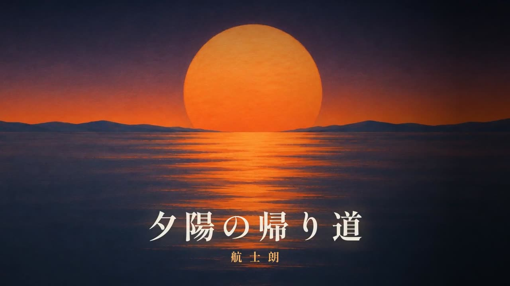
3:37 夕陽の帰り道 -
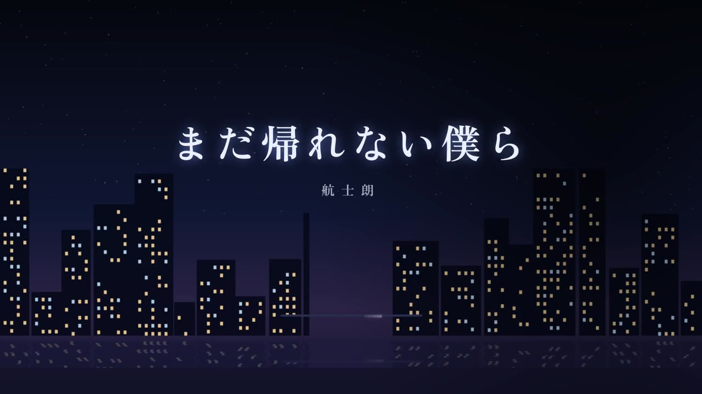
5:33 まだ帰れない僕ら -
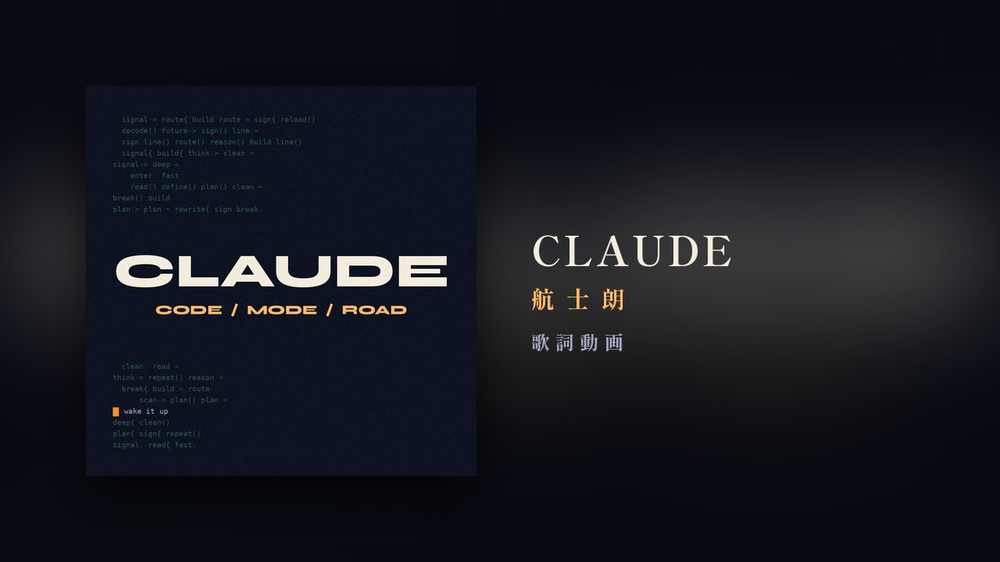
2:42 CLAUDE -
 4:24
放課後最強説
4:24
放課後最強説
-
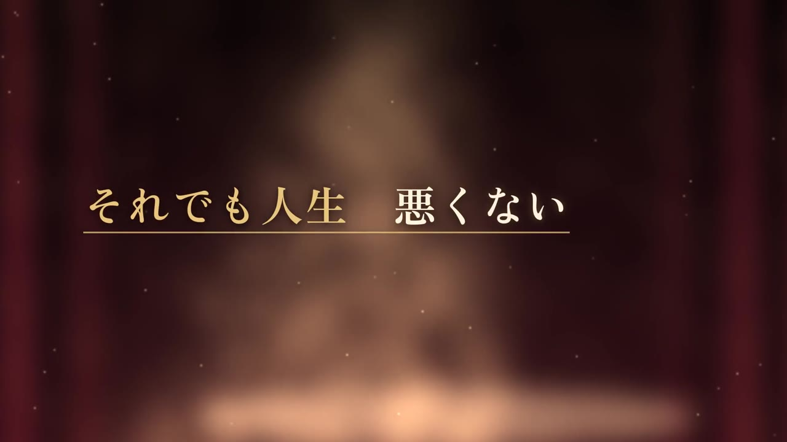
3:49 上品なろくでなし -
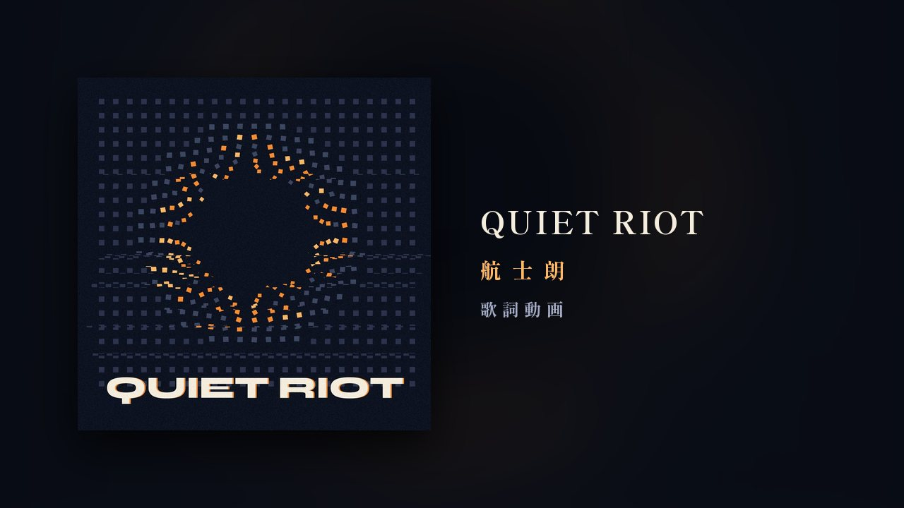
4:16 QUIET RIOT -
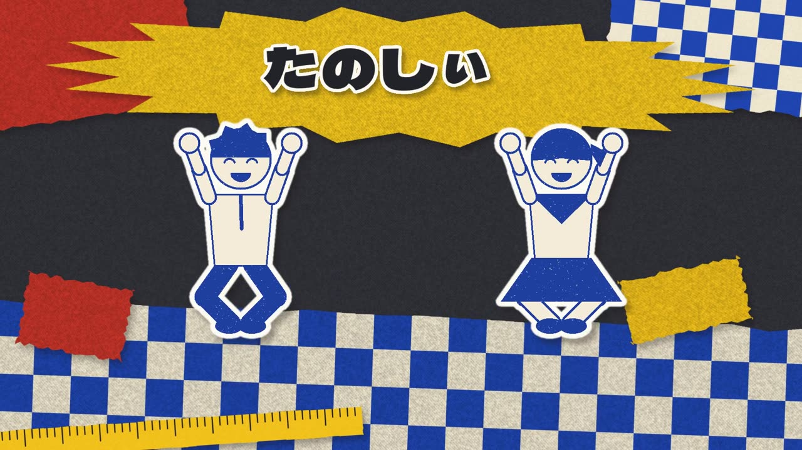
2:32 ハリハリチョキ × CHOKA -
 3:54
範囲外 feat. SUI
3:54
範囲外 feat. SUI
-
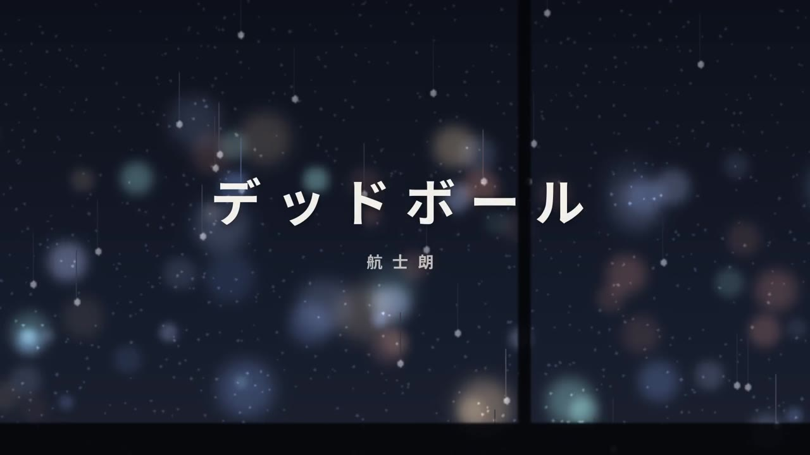
4:53 デッドボール Vo. 湊 -
 4:03
Hollywood the Yossan feat. Liam Parker
4:03
Hollywood the Yossan feat. Liam Parker
-
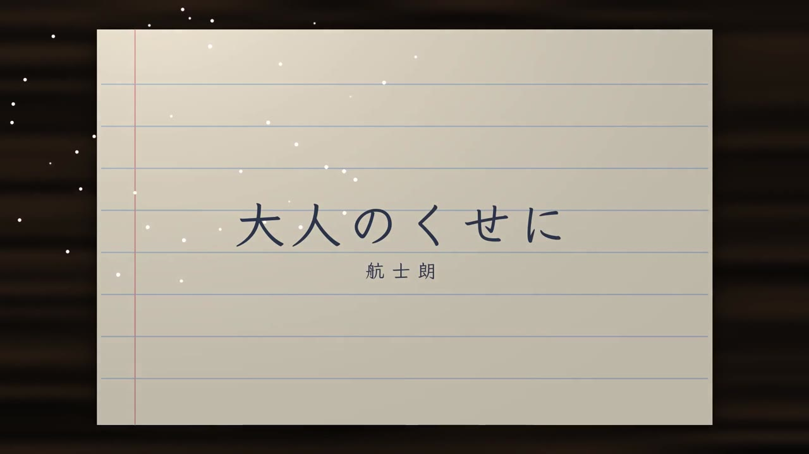
4:15 大人のくせに -
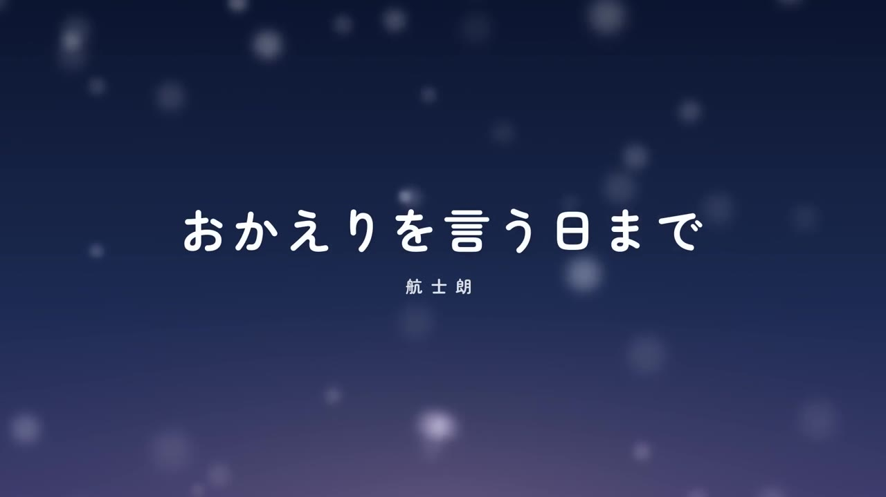
5:53 おかえりを言う日まで feat. Yuzuki -
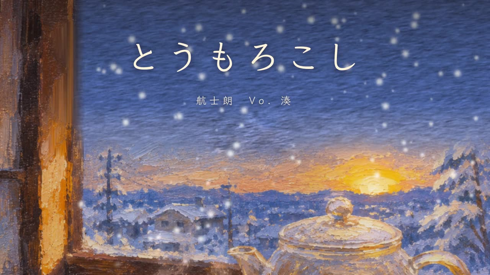
4:01 とうもろこし Vo. 湊 -
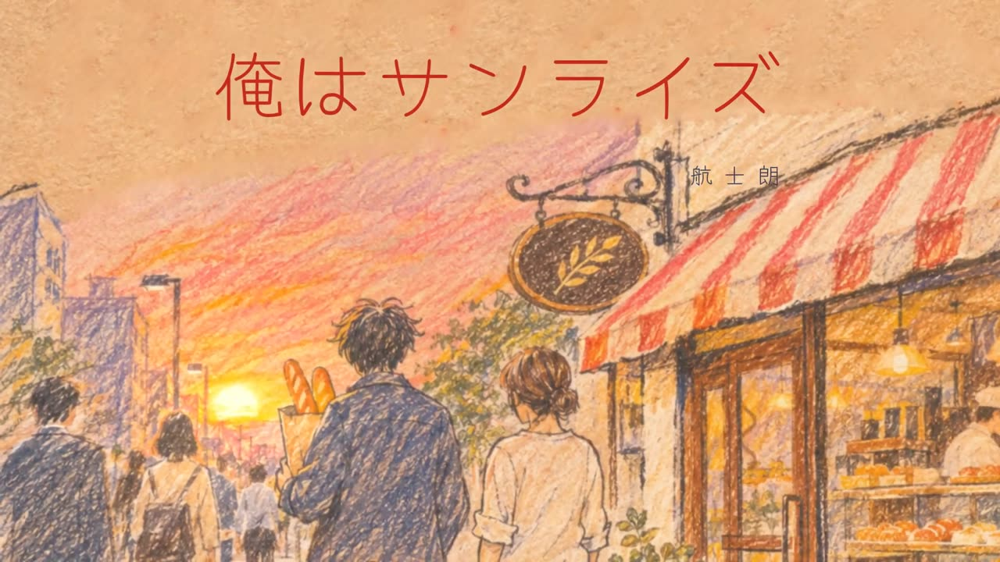
3:57 俺はサンライズ
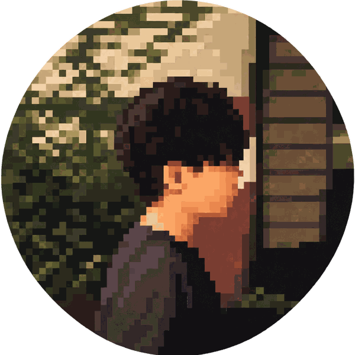
About
- 名前
- 航士朗（こうしろう）
- 誕生日
- 8月26日
- 血液型
- A型
- 活動
- 曲を作って、歌っています